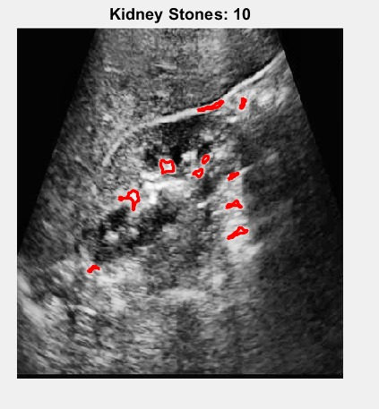
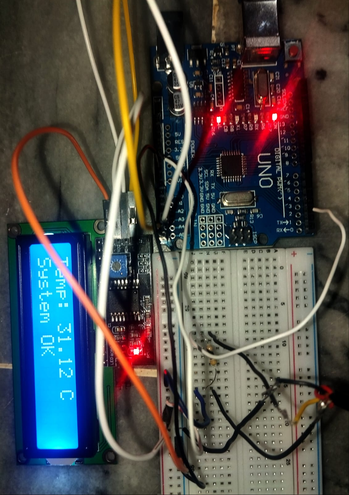
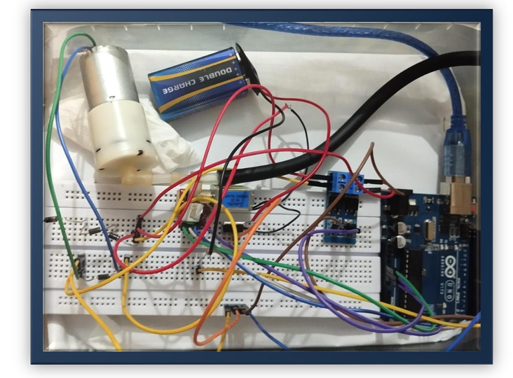

Two kinds of evidence: how I think, and what I've built
These projects are grouped into two clusters so the distinction is visible on the page itself, not left implicit — one is about how I approach and reason through open research problems, the other is about designing and building real biomedical hardware.
Data & Research Reasoning
Projects that show how I approach and think through open research problems.
Testing SEO Assumptions Against Real Data
FlyRank AI Internship
A lot of SEO advice treats certain relationships as obvious — for example, that pages targeting higher search-volume keywords will naturally get more traffic. As part of an ML internship at FlyRank AI, I'm working with an anonymized sample of real search and content performance data to check whether that actually holds up, rather than taking it for granted.
I calculated the correlation between search volume and 90-day impressions and got 0.001 — essentially zero. Suspecting that dead pages with no impressions were skewing the number, I filtered those out and re-ran it; the result didn't change. I also tested whether word count differed between growing and declining pages (it didn't), and examined how click-through rate falls off as ranking position drops (it followed the expected shape — sharp drop-off at lower positions).
That last pattern led me to my current, sharpened research question: does the CTR drop-off by ranking position differ between transactional and informational pages? My hypothesis is that people with strong purchase intent might scroll further for the right result, so transactional pages could show a shallower drop-off. I chose this scoped question over the broader "what actually predicts traffic?" question because it's specific and testable within my timeline — I'd rather fully answer a scoped question than leave a broad one half-explored.
Search volume alone does not predict traffic in this dataset. Word count is not a differentiator between growing and declining pages. The CTR-by-intent hypothesis hasn't been tested yet — that's the open question I'm currently working through, including how to define a "meaningful" difference in drop-off steepness and what minimum impression threshold avoids small-sample noise.
Scoping down to something specific and testable, instead of chasing the broad question, is a judgment call I recognized from my Alzheimer's research too — the data doesn't hand you the right method or question, you choose one based on what's actually there and defend it.
Kidney Stone Detection Using Image Processing
Detecting kidney stones in medical images typically relies on manual review, which is time-consuming and can miss subtle cases.
I built a pipeline using segmentation, filtering, and feature extraction to automatically identify probable stone locations in medical images.
A working system that flags likely stone locations, functioning as diagnostic support rather than a standalone diagnostic replacement. Completed as a Medical Image Processing project, 2025. No formal accuracy metrics (precision/recall against ground truth) were computed for this project — that's a gap I'm aware of, not one I'm hiding, and it's the next thing I'd add if I revisit this work.

Brain MRI Feature Analysis for Alzheimer's Disease
Course project — Broadly Defined Problem Report
Hippocampal atrophy is one of the earliest structural signs of Alzheimer's Disease, but assessing it from MRI scans is normally done by visual inspection, which is subjective and varies between observers. We wanted to see whether basic quantitative image features could capture some of that difference numerically.
Using 4 T1-weighted axial MRI brain slices from the public OASIS dataset (2 NonDemented, 2 ModerateDemented), we built a MATLAB pipeline that preprocessed each image with Gaussian smoothing, histogram equalization, and intensity normalization; extracted the hippocampal region using fixed proportional coordinate cropping and a binary mask; and computed five features per image — mean intensity, standard deviation, binary area, and two GLCM texture measures (contrast and correlation).
Mean intensity was slightly higher in the NonDemented scans than the ModerateDemented ones, consistent with reduced tissue density from atrophy. GLCM correlation was slightly higher in the ModerateDemented cases, which could reflect textural homogenization from neurodegeneration. Standard deviation showed no meaningful difference between groups.
Four images total is nowhere near enough for statistically valid conclusions, and we said so in the original report. ROI extraction used fixed proportional cropping rather than real anatomical segmentation, no skull stripping was applied, and no classification or machine learning was used — this was a descriptive comparison, not a detection system.
This project taught me MATLAB Image Processing Toolbox fundamentals — Gaussian filtering, histogram equalization, GLCM texture analysis — that I later drew on in my independent work. It also gave me a concrete lesson in sample size: it's easy to look at four numbers trending the "expected" direction and want to call it a finding. Being explicit about what a 4-image observational comparison can and can't tell you is a scoping judgment I try to apply more rigorously in my actual thesis research.
Hands-On Systems Engineering
Projects that show I can design and build real biomedical devices, not just analyze data.
Brief overview — detailed write-ups coming
IV Drip Controller
A low-cost Arduino-based automated IV drip controller with an IR sensor, servo motor, real-time monitoring, and safety alarms — built as an alternative to commercial infusion pumps. (2025)
Dry Bath Incubator
An ATmega328P-based dry bath incubator with closed-loop proportional control, using a DS18B20 temperature sensor and PWM heater regulation for biomedical sample incubation. (2025)

Digital Blood Pressure Monitor
A digital blood pressure monitoring system built with an Arduino Uno and an HX710B pressure sensor, cuff, electric pump, valve, MOSFET module, and display. (2025)
